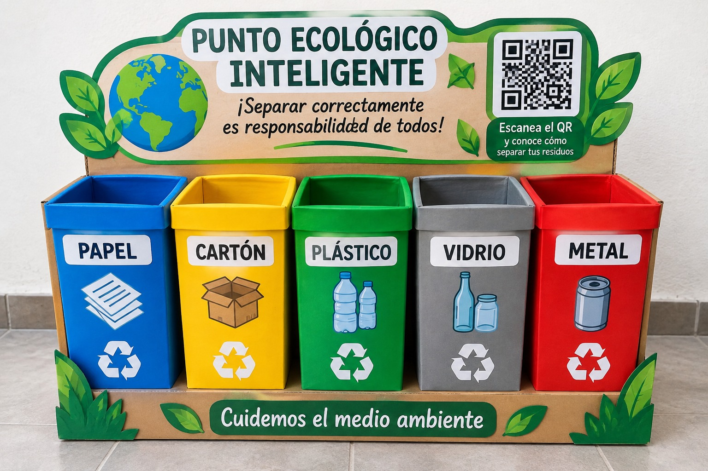

Separa en casa
Clasifica correctamente tus residuos.
Separar es el primer paso. Encuentra dónde entregar tus residuos, aprovéchalos y conecta con quienes les dan nueva vida.

Hogares + recicladores + comunidad
Clasifica correctamente tus residuos.
Identifica dónde entregar tus materiales.
Ayuda a darles una nueva vida.
Un lugar para cada residuo y una oportunidad para nuestra comunidad.
Una guía sencilla para transformar los residuos en tu hogar y cuidar nuestro municipio.
Separar correctamente permite aprovechar los materiales, reducir los residuos que llegan al relleno sanitario y apoyar el trabajo de quienes recuperan materiales.
Retira líquidos y restos de comida.
Lava cuando sea necesario y deja secar.
No mezcles aprovechables con residuos orgánicos o sanitarios.
Consulta los materiales y horarios de los EcoPuntos antes de ir.
Busca programas especiales para entregar residuos peligrosos o especiales.
Cuidar los materiales ayuda a proteger el agua, aprovechar las materias primas y reducir lo que llega al relleno sanitario.
Conocer EcoPuntos →Consulta los lugares disponibles para entregar tus residuos aprovechables.
Aquí podrás consultar el mapa, las direcciones y los materiales recibidos.
Mapa de puntos ecológicos de Chiquinquirá
Próximamente se incorporarán las ubicaciones verificadas.Consulta su ubicación y los materiales que reciben.
Verifica qué residuos puedes entregar en cada lugar.
Organiza tu próxima entrega con la información disponible.
El cambio empieza con tu próxima entrega. Cuéntanos qué vas a separar y registra tus residuos.
Un pequeño registro puede ser un gran primer paso.
1. Identifica el material.
2. Estima la cantidad por entregar.
3. Registra tus residuos.
4. Consulta dónde puedes llevarlos.
Conoce los materiales registrados y las cantidades recolectadas.
Total recolectado
Registros realizados
Material con mayor cantidad
| N.º | Material | Cantidad (kg) | Fecha |
|---|
Realiza registros para observar los resultados.
Separar a tiempo y entregar mejor. Conoce cómo se realiza la recolección en tu sector.
Sectores atendidos, días y horarios por confirmar.
Sectores atendidos, días y horarios por confirmar.
Consulta la información disponible para tu sector.
Tus ideas también forman parte de EcoConecta.
Comparte tus ideas, preguntas o propuestas para mejorar el reciclaje en nuestro municipio.
✉ Correo: información por definir
☎ Teléfono: información por definir
📍 Chiquinquirá, Boyacá, Colombia